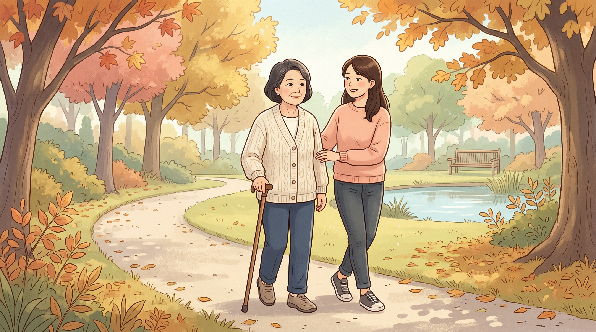

title: 小腦萎縮症：當身體與平衡長期協商 category: 神經科疾病
48 歲的陳老師是國中數學老師，平常喜歡假日和先生一起去爬山。三年前她開始覺得「不太對勁」——下樓梯時偶爾要扶扶手，她以為是年紀到了。一年後，她寫黑板的字越來越歪，學生開玩笑說「老師你今天有喝喔？」她笑笑帶過，心裡卻越來越不安。
直到有一次在校門口被一個小石頭絆倒，整個人往前撲跌，她才知道事情不只是「年紀」。家庭醫師摸不著頭緒，轉介到神經內科。核磁共振顯示她的小腦明顯萎縮，加上母親 60 多歲後也出現類似症狀，醫師懷疑是遺傳性小腦萎縮症（spinocerebellar ataxia, SCA），抽血做基因檢測之後確診為 SCA 第 3 型。
陳老師的第一反應是：「這個病可以治嗎？」醫師告訴她：目前還沒有可以「治癒」的藥物，但有很多事情可以做，讓她繼續走在喜歡的山路上更久一點。
小腦位於我們大腦的後下方，體積只佔整個大腦的十分之一，但卻負責協調全身的動作、維持平衡、調節肌肉張力。可以把小腦想像成一支管弦樂團的指揮——大腦皮質決定「要做什麼」，小腦則確保每個動作都「平順、精準、配合得剛剛好」。
當小腦的神經細胞慢慢退化、體積縮小，這位指揮就漸漸跟不上節拍。小腦萎縮症（脊髓小腦萎縮症，SCA）就是這樣的疾病：一群以進行性小腦退化為核心的神經退化症，其中很大一部分是遺傳性的，由特定基因突變造成。
根據衛福部 2023 年 8 月通報資料，台灣約有 1,534 位確診的脊髓小腦萎縮症患者。雖然在所有疾病裡屬於罕見疾病，但因為症狀獨特、又會代代相傳，對家族的影響非常深遠。
到 2024 年為止，醫學界已經確認了 超過 50 個亞型（SCA1、SCA2、SCA3 一直到 SCA50 以上），每個亞型對應不同的基因突變、不同的症狀組合與不同的進展速度。在台灣，SCA3（又稱 Machado-Joseph 病）是最常見的型別之一。
絕大多數遺傳性小腦萎縮症的病因，是基因裡的一段 DNA 序列「結巴」了——醫學上叫做 CAG 重複擴張（CAG repeat expansion）。
讓我用一個比喻來說明：
想像你在念一首詩，正常人念「春暖花開」就停下來，但有些人因為基因突變，會變成「春暖花開花開花開花開花開……」重複的次數太多，整首詩的意思就走樣了。在 SCA 患者身上，這段「結巴」翻譯出來的蛋白質會堆積在神經細胞裡，慢慢毒害小腦。
大多數 SCA 屬於自體顯性遺傳——意思是父母只要有一方帶有突變基因，孩子就有 50% 的機會遺傳到。這也是為什麼很多 SCA 患者會在家族裡看到類似的症狀「往下一代傳」。
但有兩件事要釐清： 1. 遺傳到突變基因 ≠ 立刻發病。發病的年齡因型別與個人差異而不同，多數人在 30–50 歲之間出現症狀。 2. 沒有遺傳到的孩子完全不會發病，也不會傳給下一代。
小腦萎縮症的症狀通常慢慢出現、慢慢加重，幾年之間從輕微的「怪怪的」變成明顯影響生活。
| 症狀 | 患者的感覺 |
|---|---|
| 步態不穩 | 走路東倒西歪，兩腳要張開才穩，旁人會覺得「像喝醉酒」 |
| 動作不協調 | 倒水會灑出來、扣鈕扣變慢、寫字越寫越歪 |
| 構音障礙 | 講話含糊不清、語速變慢、聲音抖 |
| 眼球轉動異常 | 看東西時眼球會不自主上下或左右抖動（眼球震顫） |
| 吞嚥困難 | 喝水容易嗆到，吃飯需要更慢更小心 |
不同 SCA 亞型還會出現額外症狀：例如 SCA7 會合併視力退化、SCA11 與 SCA40 可能有肢體痙攣、SCA21 較常見認知功能下降、SCA18 會合併周邊神經病變。這也是為什麼確診後，醫師會建議做基因檢測釐清亞型——治療策略與預後評估都需要這個資訊。
中華小腦萎縮症病友協會建議，如果你或家人有下列情況，可以做幾個簡單的自我檢測：
這些檢測只能當作參考，不能取代專業診斷。如果發現問題，請到神經內科進一步評估。
醫師會先做完整的神經學檢查，觀察走路、平衡、眼球運動、手指鼻子測試等動作協調，再評估是否有家族史。
腦部核磁共振（MRI） 是最重要的影像工具，可以直接看到小腦的萎縮程度，並排除其他可能造成類似症狀的問題（例如中風、腫瘤、發炎）。
這是確診遺傳性小腦萎縮症的金標準。台大醫院神經部目前可以做 SCA1、SCA2、SCA3、SCA6 與齒狀核紅核蒼白球路易氏體萎縮症（DRPLA）的基因檢測，其他罕見亞型則需要轉送特殊實驗室。
醫師也會評估是否有其他可治療的成因，例如自體免疫小腦炎、維生素 E 缺乏、某些藥物或酒精的長期影響——這些是少數「可治療」的小腦萎縮原因，必須優先排除。
很多病人聽到「沒藥可治」會非常沮喪。但事實上，現代神經醫學對小腦萎縮症的處理是「全方位」的——藥物只是其中一塊，而且這幾年新的進展非常多。
物理治療、職能治療、語言治療是所有 SCA 患者共同的基礎： - 物理治療：透過平衡訓練、肌力訓練、步態訓練，有實證可以延緩功能退化 - 職能治療：協助日常生活動作、輔具評估、居家環境調整 - 語言治療：訓練構音與吞嚥，預防嗆咳與營養不良
2024 年一篇系統性回顧確認，規律的物理治療對小腦退化症患者的平衡與步態有明確助益。
目前沒有任何藥物能「治癒」SCA，但有些藥物對症狀有幫助： - 抗痙攣藥（如 baclofen、tizanidine）緩解肌肉痙攣 - Riluzole、4-aminopyridine、varenicline 等藥物在部分研究中對某些亞型有改善 - Levetiracetam 對部分患者的肌陣攣有效
重複經顱磁刺激術（repetitive transcranial magnetic stimulation, rTMS）是近年最受關注的非藥物治療之一。2023 年發表的一篇隨機對照試驗統合分析發現，rTMS 對 SCA 第 3 型患者的平衡與運動功能有正面效果，且副作用輕微。對於想嘗試非侵入性新療法的患者，這是一個值得與神經科醫師討論的選項。
Troriluzole（Biohaven 藥廠開發的新一代 glutamate 調節劑）是過去兩年最受矚目的 SCA 候選藥物。2024 年公布的三期樞紐試驗顯示，接受 troriluzole 治療的 SCA 患者，疾病進展速度比對照組慢了 50–70%，相當於延緩 1.5–2.2 年的功能退化。然而，2025 年 11 月美國 FDA 對該藥的新藥申請發出 Complete Response Letter（補件通知），要求更多資料才會核准。目前還在等廠商補件，台灣也尚未上市。
針對 CAG 重複擴張的根本病因，全球有多項早期臨床試驗正在進行： - 反義寡核苷酸（antisense oligonucleotides, ASO）：直接抑制突變基因的表現 - 基因編輯（CRISPR）：在細胞層級「修剪」過長的重複序列 - RNA 干擾、幹細胞治療
這些都還在臨床試驗早期，但代表 SCA 從「無藥可治」走向「有療法可期」的轉折正在發生。
被診斷為小腦萎縮症之後，最難的不是身體的變化，而是對未來的不確定。但這個病的進展通常是緩慢的，從第一個症狀出現到嚴重影響生活，往往是十幾二十年的時間。這段時間裡，有很多事情可以做：
回到我們的陳老師。確診之後，她決定繼續教書，但開始每週兩次規律物理治療，並且加入了病友協會的支持團體。她和先生商量後，把臥室搬到一樓、浴室加裝了扶手、出門開始用一支登山杖——不是因為「病得很重」，而是想預先做好準備。
兩年後，她的步態確實比剛確診時更不穩了，但因為持續復健，惡化的速度比醫師預期的慢。她依然教數學，依然和先生在週末走平緩的步道（雖然不再爬大山了）。她跟年輕的患者說：「這個病不會偷走你所有的東西，除非你先放棄。」
請掛神經內科，特別是有動作障礙專長的醫師。
免責聲明：本文僅供衛教參考，不能取代醫師的專業診斷與治療建議。如有疑慮，請諮詢您的醫師。